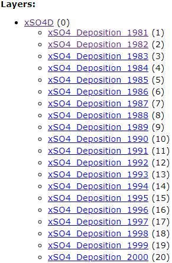
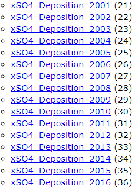

Use Case Examples
In this example, the Thematic Slider plugin was used to highlight xSO4D wet deposition maps 1981-2015. This map service has a total of 36 layers each showing the XS04D. The thematic slider provides the ability to load each layer and cycle through them highlighting change over time.
 
This particular map service has a total of 36 layers present. Although using all 36 layers is possible it is not recommended. Loading all 36 maps at the same time results in extra time required for loading. For this use case, the thematic slider was used to show cumulative change for every 10 years between 1981 – 2015.
Tip
It is recommended to use the thematic slider with no more than 15 layers at a time. Testing has shown that a maximum of 15 layers meets the optimal loading time as recommended by the FGP Data team.
If there is a case where there are multiple layers to be used with the thematic slider, you may consider adjusting the time between the layers. For example, if there is a dataset consisting of raster layers spanning from 1990 – 2020, you can consider adding layers after every 10 years. This simple change allows overall load time performance to improve as well as highlighting change occurring every decade